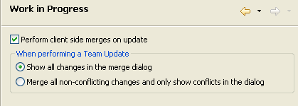
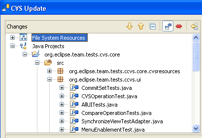
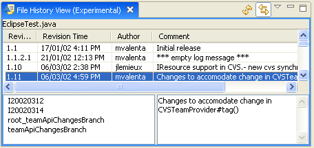

| Eclipse 3.2 - Team Support for Logical Model Integration |
Version 3.2 M4
The Proposed Support for Logical Model Integration document outlines all the areas that are targeted to be addressed in 3.2 related to logical model integration support in Eclipse. The purpose of this document is to outline the proposed solutions relating to Team. Feedback is strongly encouraged and may be provided on the platform-team-dev mailing list or in the bug 37723 for this plan item. The API described in this document is available in builds but is not yet final and may undergo some revision before the end of the Eclipse 3.2 development cycle.
This document is broken into the following sections:
It also contains a pointer to a download that contains a simple Library example.
The relationship between the APIs presented in this document can be described in terms of a repository operation being performed on a logical model. Some of the API relates to any repository operation while other parts are specific to a merge operation (e.g. a CVS update). Here is a description of the steps required to perform a CVS update on a logical model as it relates to the API contained in this document.
The following sections describe each of these API pieces in more detail.
This solution involves adding API to the Resources plugin that maps logical models elements to workspace (i.e. file system) resources. The API is purposely simple with logical model manipulations omitted. A client can't use this interface to display logical models or gain any interesting additional knowledge about it. It's purpose is simply to map one or more model elements to workspace resources.
The API consists of the following classes:
ResourceMapping class can be viewed here.
The methods of interest are:
Object getModelObject(): The model object from which the
mapping was derived (or adapted).ResourceTraversal[] getTraversals(ResourceMappingContext, IProgressMonitor):
The resource traversal that cover the resources that constitute the model
object.ResourceTraversal
contains a set of resources and a depth flag that indicates the depth to which
the resources in the traversal are associated with the originating model object.
Resource traversals are provided to a client by a resource mapping in order
to describe the contents of a model in such a way that the client (e.g. a
repository provider) can perform its operations in as efficient a means as
possible. Methods of interest are:
getResources()getDepth() ResourceMappingContext
and RemoteResourceMappingContext
is a bit more complicated and is described later.There are two types of plugins that should be interested in resource mappings. Those who provide a model that consists of, or is persisted in, resources in the workspace and those that want to perform operations on resources. The following two sections describe how to associate a resource mapping with a model object and how to contribute menus to objects that adapt to resource mappings.
Plugins that adapted their model objects to IResource in order
to get resource specific actions shown in the context menu can now adapt to
ResourceMapping if a richer description of how the object adapts
to resources is beneficial. However, they are not required to do so if there
is no benefit. For instance a Java compilation unit (i.e. *.java file shown
in a JDT view) that now currently adapts to IFile need not adapt
to ResourceMapping since nothing is gained. However, a Java package
should adapt to ResourceMapping in order to indicate that the package
consists of only the files in the corresponding folder and not the subfolders.
The preferred way to adapt model elements to a resource mapping is to use an adapter factory. The following is the XML markup for contributing an adapter factory in a plugin manifest.
<extension
point="org.eclipse.core.runtime.adapters">
<factory
class="org.eclipse.example.library.logical.AdapterFactory"
adaptableType="org.eclipse.example.library.Book">
<adapter type="org.eclipse.core.resources.mapping.ResourceMapping"/>
</factory>
<factory
class="org.eclipse.example.library.logical.AdapterFactory"
adaptableType="org.eclipse.example.library.Library">
<adapter type="org.eclipse.core.resources.mapping.ResourceMapping"/>
</factory>
...
</extension>
The adapter factory implementation would look something like this:
public class AdapterFactory implements IAdapterFactory {
public Object getAdapter(Object adaptableObject, Class adapterType) {
if((adaptableObject instanceof EObject) && adapterType == ResourceMapping.class) {
return new EObjectResourceMapping((EObject)adaptableObject);
}
return null;
}
public Class[] getAdapterList() {
return new Class[] {ResourceMapping.class};
}
}
Model objects must implement the IAdaptable interface. When they
do so, they must ensure that the Platform adapter manager is consulted. This
can be done by either subclassing PlatformObject or by using the
following line of code:
Platform.getAdapterManager().getAdapter(Object, Class)
The above is the preferable approach. However, the model object can implement
the IAdaptable interface and provide a getAdapter(Class) implementation
that creates returns an instance of ResourceMapping explicitly
when asked for one. This is a more straightforward approach but the least desirable
as the model must have explicit knowledge of the adaptation to resources.
In some cases, the provider of a logical model may not want their model to
adapt to IResource in every context or may want the object to adapt
differently for object contributions than for other contexts. The workbench
UI provides a special intermediate adapter API, IContributorResourceAdapter,
for this purpose. When objects are being adapted to IResource in
the context of object contributions, the workbench first tries to adapt the
resource to IContributorResourceAdapter before trying to adapt
to IResource directly. A new sub-interface of this interface, IContributorResourceAdapter2,
has been added which provides the same capability for ResourceMapping.
The only difference is that the model provider should register a factory for
IContributorResourceAdapter since the Workbench does an instanceof
check to see if the contributed adapter is also an instance of IContributorResourceAdapter2.
The implementation of the ResourceMapping subclass for a Java
package would look something like this.
public class JavaPackageResourceMapping extends ResourceMapping {
IPackageFragment package;
...
public getModelObject() {
return package;
}
public ResourceTraversals[] getTraversals(
ResourceMappingContext context,
IProgressMonitor monitor) {
return new ResourceTraversal[] {
new ResourceTraversal(
new IResource[] { package.getCorrespondingResource() },
IResource.DEPTH_ONE, IResource.NONE)
}
}
}
This is a fairly straightforward mapping so the implementation is not complex.
The complexity of the resource mapping implementation will, of course, vary
from model to model. The EObjectResourceMapping example used above
is implemented in the example and has a more complicated implementation.
Plug-ins that contribute extensions to adaptable extension points will have
to make two changes to support the new ResourceMapping APIs:
ResourceMapping (for those for which this is
appropriate).ResourceMapping instead of
IResource and respect the depth constraints provided in the traversals.ResourceMappingContext if they manage
remote resources (more on this below)First of all, plugins that add object contributions to IResource
(CVS, Search, Compare) can now add them to ResourceMapping instead,
if the action can apply to multiple resources. Here is an XML snippet that contributes
a menu action to objects that adapt to resource mappings:
<extension
point="org.eclipse.ui.popupMenus">
<objectContribution
adaptable="true"
objectClass="org.eclipse.core.resources.mapping.ResourceMapping"
id="org.eclipse.example.library.ResourceMappingContributions">
<action
label="Show Resource Mappings"
class="org.eclipse.example.library.contributions.ShowResourceMappingsAction"
menubarPath="additions"
id="org.eclipse.example.library.showMappings"/>
</objectContribution>
</extension>
Contributions to ResourceMapping will automatically apply to objects
that adapt to IResource. This transitive association is handled
by the Workbench.
Filtering of the contributions to resource mappings can be done using action filters or expressions. An expression for filtering by project persistent property has been added to allow repository providers to have their menus appear on projects that are mapped to their repositories.
<extension
point="org.eclipse.ui.popupMenus">
<objectContribution
objectClass="org.eclipse.core.resources.mapping.ResourceMapping"
adaptable="true"
id="org.eclipse.team.ccvs.ui.ResourceMapperContributions">
<enablement>
<adapt type="org.eclipse.core.resources.mapping.ResourceMapping">
<test
property="org.eclipse.core.resources.projectPersistentProperty"
args="org.eclipse.team.core.repository,org.eclipse.team.cvs.core.cvsnature" />
</adapt>
</enablement>
<action
label="%UpdateAction.label"
definitionId="org.eclipse.team.cvs.ui.update"
class="org.eclipse.team.internal.ccvs.ui.actions.UpdateAction"
tooltip="%UpdateAction.tooltip"
menubarPath="team.main/group2"
id="org.eclipse.team.cvs.ui.update">
</action>
...
</objectContribution>
</extension>
Actions that have been contributed to the ResourceMapping class
will be given a selection that contains one or more ResourceMappings.
It is the actions responsibility to translate the resource mapping into a set
of resources to be operated on. This can be done by calling getTraversals
to get the traversals of the mapping. Traversals are used to allow the clients
of the traversal to optimize their operations based on the depth of the resources
being traversed. A client may traverse the resource manually or may use the
resource and the depth as input into an operation that the action delegates
to do the work. As an example, if the user performs a CVS update on a java package
and the java package resource mapping maps to a folder of depth one, CVS would
issue an appropriate command ("cvs update -l" for those who are curious) which
would perform a shallow update on the folder the package represents.
One of the advantages of a Resource Mapping API is that it allows plug-ins to implement any operations they desire in terms of resource mappings (e.g. CVS update, CVS commit, CVS tag, dirty decoration, etc.). However, the API that has been introduced so far deals only with the local state of the model. When working with a model that may be shared between developers, you end up in a situation where the remote state of the model (i.e. the state of the model that another user has checked-in to the repository) may differ from the state in the workspace. If you performed a CVS update, you would want the local state of the model to match the remote state even if it meant that additional files needed to be included or some files needed to be removed.
This is not an issue for some logical models. For instance, a java package is a container visited to a depth of one, regardless of the remote state of the model. Given this, a repository provider can easily determine that outgoing deletions should be included when committing or that incoming additions should be included when updating. However, the resources that constitute some logical models may change over time. For instance, the resources that constitute a model element may depend of the contents of a manifest file (or some other similar mechanism). In order for the resource mapping to return the proper traversal, it must access the remote contents of the manifest file (if it differs from the local contents) in order to see if there are additional resources that need to be included. These additional resources may not exist in the workspace but the repository provider would know how to make sure they did when the selected action was performed.
In order to support these more complex models, a RemoteResourceMappingContext
can be passed to the ResourceMapping#getTraversals method. When
a context is provided, the mapping can use it to ensure that all the necessary
resources are included in the traversal. If a context is not provided, the mapping
can assume that only the local state is of interest.
A ResourceMapping need only worry about a context supplied to
the getTraversals method in cases were the resources that make
up a model change over time and the relationship between the model and resources
cannot be described by a simple traversal that is guaranteed to encompass those
resources (and only those resources) that constitute the model. For example,
although the resources of a Java package may change over time, the package can
be described as a folder of depth of one so a resource mapping for java packages
would not ned to make use of the resource mapping context.
As a more complicated example, consider an HTML file that contains several
images. Let's make the assumption that any images references from an HTML file
are part of the model of that file. When updating the local contents of the
HTML file from a repository, the user would expect that any new images would
be included. The getTraversals method for a ResourceMapping
for the HTML file model would look something like this:
public class HTMLResourceMapping extends ResourceMapping {
private HTMLFile htmlFile;
public ResourceTraversal[] getTraversals(ResourceMappingContext context,
IProgressMonitor monitor)
IResource[] resources = htmlFile.getResources();
if (context instanceof RemoteResourceMappingContext) {
// Look for any additional resources on the server
RemoteResourceMappingContext remoteContext = (RemoteResourceMappingContext)context;
IFile file = htmlFile.getFile();
if (remoteContext.hasRemoteChange(file, monitor)) {
IStorage storage = remoteContext.fetchRemoteContents(file, monitor);
IResource[] additionalResources = getReferences(storage.getContents());
resources = combine(resources, additionalResources);
}
if (remoteContext.isThreeWay() && remoteContext.hasLocalChange(file, monitor)) {
IStorage storage = remoteContext.fetchBaseContents(file, monitor);
IResource[] additionalResources = getReferences(storage.getContents());
resources = combine(resources, additionalResources);
}
}
return new ResourceTraversal[] {
new ResourceTraversal(resources, IResource.DEPTH_ZERO, IResource.NONE)};
}
}
Notice that there are two sets of resources included in the model: those derived from the local contents of the HTML file in the workspace and those obtained from the contents of the remote file and base file. In either of these two sets, there may be resources that do not exist in the workspace. For instance, the local HTML file may contain a relative link to an image that does not exist in the workspace. This resource should be included so that it will be fetched if it exists remotely. As for the remote file, it may contain a new copy that references additional images that should be fetched when the new remote contents are downloaded.
Any tool that is providing the ability of sharing workspace resources through a repository and is supporting ResourceMappings should provide an appropriate context for determining the relevant remote state of the model resources. The context provides three basic queries:
The answer to the first question above depends on the type of operation that is being performed. Typically, updates and merges are three-way while comparisons and replace operations are two-way.
The Eclipse Team API includes a Subscriber class that defines
an API for providing the synchronization state between the local workspace and
a remote server. A SubscriberResourceMappingContext
has been created that uses a Subscriber to access the necessary
remote state. Clients that have a Subscriber do not need to do
any additional work to get a resource mapping context.
Model providers are a means to group related resource mappings together. Here
is a link to the ModelProvider
class. This class serves two main purposes:
The following is an example of a modelProvider extension definition.
<extension
id="modelProvider"
name="Library Example"
point="org.eclipse.core.resources.modelProviders">
<modelProvider
class="org.eclipse.team.examples.library.adapt.LibraryModelProvider"
name="Library Example"/>
<extends-model id="org.eclipse.core.resources.modelProvider"/>
<enablement> <test property="org.eclipse.core.resources.projectNature" value="org.eclipse.team.examples.library.view.nature" />
</enablement>
</extension>
The LibraryModelProvider is a subclass of ModelProvider.
The enablement rule is used to match resources that the Library model persists
its model in. In the above example, the model provider will match any resource
in a project that has the library nature.
Once the model provider is defined, the ResourceMapping#getModelProviderId()
method should be overridden to return the id of the model provider.
public String getModelProviderId() {
return "org.eclipse.team.examples.library.adapt.modelProvider";
}
To get the proper inverse mapping of resources to resource mapping for those
resources that match your provider's enablement rule, you should also override
one or both of the getMapping methods. The method that you need
to override depends on whether your model has elements that contain multiple
resources or not. If your model elements map to a single resource, you can override
the method that accepts a singleIResource argument. Otherwise,
you will need to override the method that accepts an array of resources. Here's
an example using the single resource case.
The following example method wraps a library model file in an appropriate resource
mapping. It also wraps folders that contain files that are of interest to the
model provider.
public class LibraryModelProvider extends ModelProvider {
public ResourceMapping[] getMappings(IResource resource,
ResourceMappingContext context, IProgressMonitor monitor) {
if (isModelFile(resource)) {
// Return a resource mapping on the file
return new LibraryResourceMapping(resource);
} if (containsModelFiles(resource)) {
// Create a deep resource mapping on the container
return new LibraryContainerResourceMapping(resource);
}
// The resource is not of interest to this model provider
return null;
}
}
Clients can then access the model provider to determine whether the model providers cares about the resources that are about to be operated on. The next section describes API that will be provided to team operations that use the model provider API to determine the complete set of resource mappings to be operated on when a team operation is performed on a set of selected resources or model elements.
For team operations, the selected mappings need to be translated into the set of mappings to be operated on. This process involves consulting all model providers to ensure that they get included in operations on resources that match their enablement rules. The term we use to describe the complete set of resource mappings to be operated on is the operation scope. The following API has been provided for this:
IResourceMappingScope:
Interface that defines the API for accessing the scope of the operation. It
provides access to all the resource mappings being operated on and the traversals
for those mappings as they were calculated during the scope building process.ScopeGenerator:
Class that is used to build a scope given a set of input mappings and a resource
mapping context.The code for creating an initializing an input would look something like this:
ResourceMapping[] selectedMappings = getSelectedMappings();
ResourceMappingContext context = getResourceMappingContext();
ScopeGenerator builder = new ScopeGenerator();
IResourceMappingScope scope = builder.prepareScope(selectedMappings, context, monitor);
if (scope.hasAdditionalMappings()) {
// inform user of additional mappings
}
// Now get the set of mappings to be operated on
ResourceMapping[] operationMappings = scope.getMappings();
// Get the traversals that were cached during the input determination process
ResourceTraversal[] allTraversals = scope.getTraversals();
Team operations will provide the set of selected resource mappings and a resource
mapping context. They will then call buildScope which calculates
all the resource mappings that need to be included in the operation. The scope
also caches the results so they do not need to be recalculated during the operation.
You can get all the traversals or only those for a particular mapping.
This section offers a brief explanation of what model based merging involves and provides pointers to example implementations in the SDK.
buildContext method to return an IMergeContext.
The merge context provides the model access to the synchronization state of
the files involved (see the getSyncInfoTree() method) along with
access to the contents of the files (see SyncInfo#getRemote()
and SyncInfo#getBase()). The CVS UI plugin contains an a merge
operation subclass named CVSMappingMergeOperation.An important aspect of model-based merging is the API used to communicate the synchronization state of the resources involved to the model provider. There are two interfaces of interest:
API has been added in M4 that allows models to provide a team-aware content provider that can be used by Team providers to display the effetcs of team operation in termes of model elements and hierarchies. The CVS Team>Update context menu action in Eclipse 3.2 Milestone 4 (M4) can be configured to display logical model elements and hierarchies when previewing the effects of an update. You must turn on the "Perform client side merges on update" preference on the Team>CVS>Work In Progress preference page.

In M4, Java implements a team-aware content provider which allows the effects of an update to be shown with respect to the Java model.

There are three steps required to create a team-aware content provider
IResourceMappingScope
and ISynchronizationContext as either of these could be used
as the input object to a Team viewer.The following xml shows how the Java content provider is made team-aware.
<extension point="org.eclipse.ui.navigator.navigatorContent">
<navigatorContent
contentProvider="org.eclipse.jdt.internal.ui.model.JavaSynchronizationContentProvider"
id="org.eclipse.jdt.ui.resourceContent"
labelProvider="org.eclipse.jdt.internal.ui.model.JavaSynchronizationLabelProvider"
name="%JavaModelContent.name">
<enablement>
<or>
<instanceof value="org.eclipse.jdt.internal.ui.model.JavaModelProvider"/>
<instanceof value="org.eclipse.jdt.core.IJavaElement"/>
<instanceof value="org.eclipse.team.core.mapping.IResourceMappingScope"/>
<instanceof value="org.eclipse.team.core.mapping.ISynchronizationContext"/>
</or>
</enablement>
</navigatorContent>
</extension> <extension point="org.eclipse.ui.navigator.viewer">
<viewerContentBinding viewerId="org.eclipse.team.ui.navigatorViewer">
<includes>
<contentExtension isRoot="true"
pattern="org.eclipse.jdt.ui.resourceContent"/>
</includes>
</viewerContentBinding> </extension> <extension> id="jdtContentProvider"
point="org.eclipse.team.ui.teamContentProviders">
<teamContentProvider
contentExtensionId="org.eclipse.jdt.ui.resourceContent"
modelProviderId="org.eclipse.jdt.ui.modelProvider"/>
</extension>
The JavaSynchronizationContentProvider
and JavaSynchronizationLabelProvider
classes in the above example are subclasses of SynchronizationContentProvider
and SynchronizationLabelProvider
and make use of the synchronization context to provide filtering and label decoration.
The proposed file history API consists of the following interfaces:
Along with this API, a generic file history view is being proposed. A preview version is available in M4.

This example, available here, is built on a model that consists of libraries, books and writers.
See the Eclipse Team/CVS 3.2 plan for what is happening in M5 and beyond.
This document contains a description of the API available so far in 3.2. This is only a portion of the feature set described in the Proposed Support for Logical Model Integration document. Additional API for Team support of logical model integration will be added to the document as it becomes available. Also, the API described in this document may still undergo change in the 3.2 release cycle. The document will be updated with any changes as well.
Changes in version 3.2 M4
Changes in version 3.2 M3